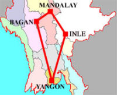
We participated Myanmar 7 night 8 days packaged tour which visited 4 area, Yangon, Bagan, Mandalay and Inle. According the itinerary I will try to show photos and my impression. I had thought Myanmar was not fit to travel as a tourist because of their military regime before I reached. But most information indicated Myanmar was quite safe to visit, for example Myamar was safer than Japan. Before I went to Myanmar I found wonder thing that 1USD=6.7K officially but in Myanmar maybe 1USD=300 to 750K was not sure in some information on internet. After arriving Yangon it was 1USD=750K but in Mandalay 1USD=800K. In addition tourist have to change 200USD to 200FEC which is special money as it can use to government or official place equally and in public it is reduced for USD. Myanmar money was amazing.To enlarge, click some photos which have titles in light blue color background.
Day-01(06/20): Yangon Arrival
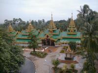 | 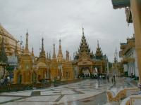 | 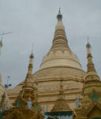 | 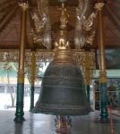 |
| Shwedagon Pagoda 01 | Shwedagon Pagoda 02 | Shwedagon Pagoda 03 | Shwedagon Pagoda 04 |
We visited Shwedagon Pagoda - 2500 years old world famous stupa. Then, we were proceed to Karaweik Palace - a famous restaurant located on the Royal Lake built in the style of Royal Barge used by Myanmar's old days Kings, for Dinner and Traditional Cultural Show. Our fist night of stay in Yangon - the capital of Myanmar.
Day-02(06/21): Yangon-Bagan
We had flight to Bagan to discover its glorious past and histories. Whole day sightseeing of Bagan's most important temples and pagodas ranging from the temples with the earliest wall paintings to the prototype pagoda that influenced the designs of later Buddhist monuments. Tour highlights include: Shwezigon Pagoda; Kyansitta Umin; Ananda Temple; Dhammayangyi Temple; Manuha Temple; Nanpaya; Minanthu village; and Lacquer-ware workshop. Dinner and Puppet Show at Bagan's top restaurant. Overnight in the old capital of Myanmar's First Empire.
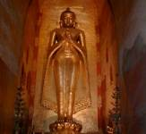 | 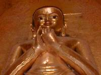 | 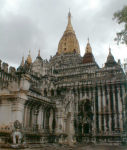 | 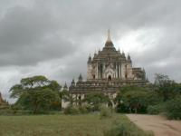 |
| the Buddha image 01 | the Buddha image 02 | the most beautiful pagoda | the most highest Pagoda |
This Buddha image standing is smiling for visitors but if you go up to the Buddha image and look up, he will look serious. Because coming is welcomed but teaching is becoming serious. I am impressed when I heard this story from our guide.
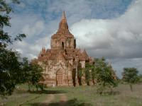 | 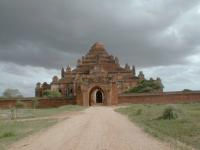 | 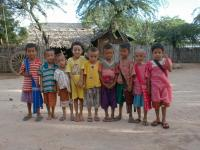 | 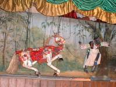 |
| Pagoda 01 | Pagoda 02 | children in village | Puppet Show |
Day-03(06/22): Bagan-Mandalay
We flew to Mandalay, the former capital of Myanmar's last Kings. Tour highlights are: Mahamuni Pagoda - housing a Buddha Image made during the life time of Buddha; marble carving workshops; Shwenandaw Monastery - noted for its exquisite wood carvings; Atumashi Monastery; and Kuthodaw Pagoda - known as the world biggest book. After lunch, we visited Mandalay Palace; silkweaving and gold leaf beating workshops. End of the tour at Mandalay Hill - a vintage point for panoramic view of the city.
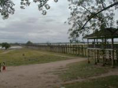 | 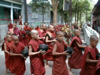 | 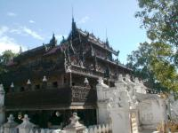 | 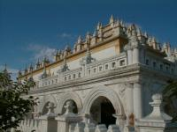 |
| U Bain Bridge | Mahagandaryone Monastery | Mandalay Palace 01 | Mandalay Palace 02 |
Myanmar has 4 to 6% monks of the population but it looks more, especially in Mandaly.
Day-04(06/23): Mandalay-Amarapura-Sagaing-Mingun
We visited Amarapura - an ancient capital built on the advice of astrologers. Tour highlights are: Mahagandaryone Monastery - where one may observe the daily life of the monks studying Buddha's scriptures; Bagaya Monastery - where one may observe the collection of various Buddha's images from different centuries; U Bain Bridge - 1.2 km long wooden bridge built over 200 years ago; and wood carving village. Then, proceed to Sagaing Hill - known as the center for meditation. Visit Kaungmudaw Pagoda - an enormous dome shaped pagoda built in 16th century; pottery and silver smith workshops. After lunch, boat trip to Mingun where the world largest ringing bell exist. Sightseeing Mingun village and environs. Dinner and overnight in Mandalay.
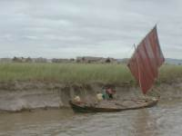 | 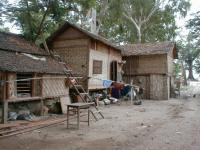 | 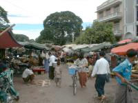 | 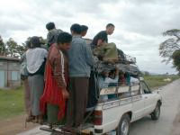 |
| Boat taking sand | Bamboo house in village | Market | Bus? |
Day-05(06/24): Mandalay-Heho-Pindaya
Pindaya, a small quiet town famous for it's thousand of Buddha Images deposited inside the caves centuries of years ago. We visited Pindaya caves, traditional Shan paper making village, pottery and umbrella making villages. Dinner and overnight in Pindaya.
Day-06(06/25): Pindaya-Inle
We drove to Inle Lake - famous for its unique leg-rowers and the scenic beauty of its sprawling lake, floating villages, and vegetable gardens. Tour highlights are: floating market ( once a time on every 5days); Phaungdaw Oo Pagoda; silk weaving handlooms at Inpawkhone village; Black smith making village; Ngaphechaung Monastery; and floating gardens. Traditional Shan dinner and cultural show at hotel. Overnight in Nyaungshwe or Lake Inle.
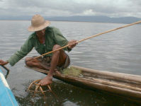 | 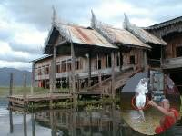 | 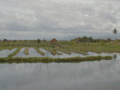 | 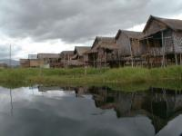 |
| catching fish in special method | floating temple | floating vegetable garden | floating houses |
Around Inle Lake was the most interesting place where had quite a few tribes and their culture. Especially floating vegetable garden was amazing that they grew up it by boating and fertilizer is natural lake-weed and lake-mad. The monk who lived in floating temple for four years broke cats in jumping through the small ring.
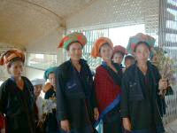 | 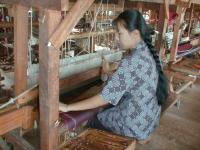 | 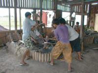 | 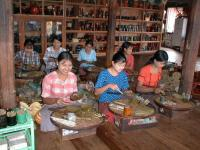 |
| The Pao tribe in Shan state | weaving factory | black smith | making traditional cigar |
Pao is one of the tribe in Shan state. Each small village had own handicraft or manufacturing but its wage was very low, maybe about 500K a day.
Day-07(06/26): Inle-Taunggyi-Heho-Yangon
We drove up to colourful Taunggyi Market, where one can see the various hilltribes from around Taunggyi come down for shopping and selling fresh vegetables and all sorts of regional products. Drive back to Heho airport for departure back to Yangon by flight. Afternoon arrive at Yangon airport, transfer to hotel and be at leisure. Later in the afternoon, half day sightseeing tour includes visits to: Sule Pagoda - the heart of Yangon City; Chaukhtatgyi Pagoda - a colossal reclining Buddha Image; Bogyoke Market - formerly known as Scott Market; and souvenir shopping center. Evening, visit China Town before dinner at a restaurant. Overnight in Yangon.
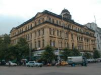 | 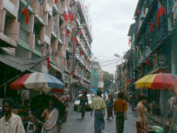 | 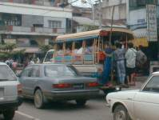 | 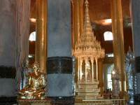 |
| a colonial time building | Inside of China-town | Bus on a street | Inside of a new temple |
I saw buses hanging a lot of people who looked danger. I heard in Yangon motor bicycles were prohibited to prevent generals from assassinators. In some temple electricity was used to decorate Buddha image was surppried us.
Day-08(06/27): Yangon-Departure
Early morning transfer to Yangon International Airport for departure.
I saw a lot of temples and pagodas there, they had rich history and some was interesting. I found different culture, however, in their country donation was perhaps common as they were Buddhist. It forced us to pay money wherever and whoever, so it made us unpleasant although I was not used to a tip or donation. For instant, guides could not enter airport building, and at Heho airport even the site and strange man asked us my name and brought us the gate where our guide is waiting in addition another boy brought our reggae to car parking. After that I was inquired 200K as tip. I felt this is compulsory. Famous temple enter fee was 5USD and duty for camera was 30 or 50K and at temples many people gathered to us to request donation or sell flowers. I thought that they were deep Buddhists for very long time, but how economy influenced their mind to get worse so fast. In any event I had various experience was nice and funny.
{kind=link}
{kind=link}
{kind=link}
{kind=link}
{kind=link}
{kind=link}
{kind=link}
{kind=link}
{kind=link}
{kind=link}
{kind=link}